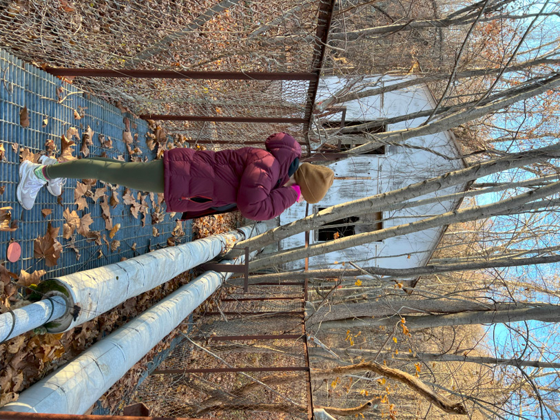
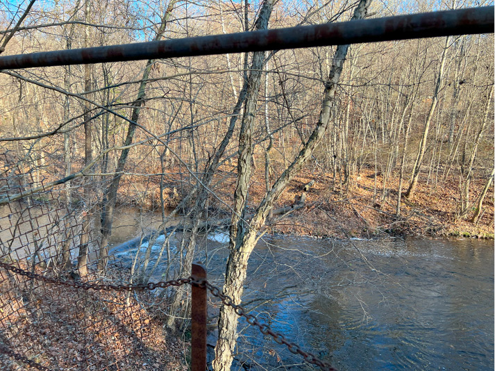

59
On the lower path, closer to the river, the first structure you’ll encounter is an engine shed. Extending from its floor level out toward the river is a raised metal grate platform, with only thin, ailing vertical supports connecting it to the ground at its end. It can support a person’s weight still, but may start to sway with 2 people on top. The severed pipes at its end suggest its relation to a greater whole; A rusting node in a fragmented network. In the riverbed below, you can see a pipe that traverses the stream, obstructing its flow slightly.


60